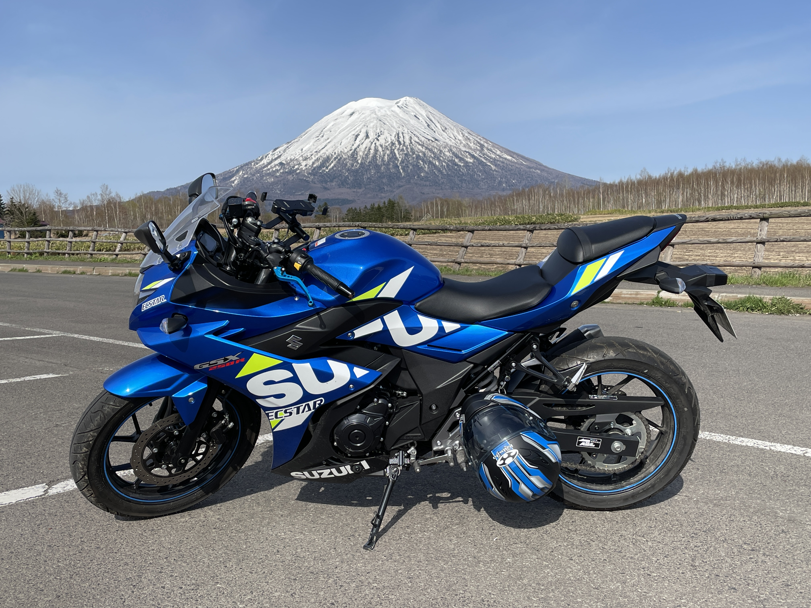

山Kのメモ置き場
山Kの自己紹介
1993年に北海道で生まれる。
地元の公立高校を経て2012年に弘前大学に入学し、2016年春に理工学の学士号を取得。
その後、2016年に北海道大学大学院に入学し、2018年春に理学の修士号を取得。
2018年春から新卒社会人として技術職に就く。
趣味の数学では解析学系に興味を示すことが多いが、他分野でも気になるテーマがあれば
その都度インターネットや専門書で情報を収集している。
数学以外の趣味は主にバイクとカラオケ、麻雀である。バイクは現在SUZUKIのGSX250Rに乗っており、
カラオケは1990年代の曲を好んでよく歌う傾向にある。
山K(メイン)のXアカウントは
こちら
アカウント名(現在：山K)は気分で変わるが、IDは変更する予定は現在のところはない。
山K(麻雀メイン)のBlueskyアカウントは
こちら
トップページは
こちら
SUZUKI GSX250R ('21)
